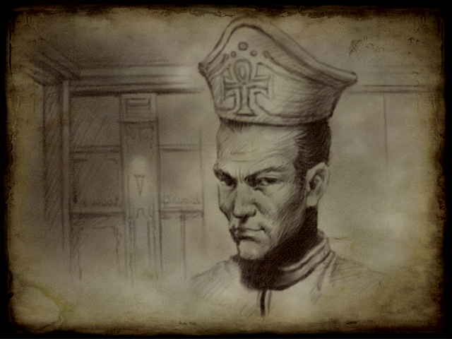

Becoming the Hero's Pope
Becoming the Hero's Pope
|
 |
The great event in their history that only seemed peaceful came from the resurrection of Galgadol from the ruins of the gods in the central kingdom of Esch. The razor stone that lost its owner, who had been sleeping deep in the ruins of the gods, was awakened one day by an unknown power. The agents of this terrible destruction killed people as they came, and many clergy and wizards came forward. There was no stopping the destruction of Gargadol. |
An emergency meeting was convened at the Vatican in Esch, and the Vatican sent a number of soldiers, knights, and priests, but they were all victims of cutthroat. Meanwhile, a young clergyman appeared with the group. He sealed the ruins of the gods with the power of magic. He soon became a hero of the continent and became one of the greatest heroes in the world, sacrificed by Galgadol. On behalf of many clergy, I was given various duties in the diocese.
One day after another peaceful period, a sudden incident occurs in which Pope Shan Tsukel is found dead. People tried to sign the pope's autograph, but they could not find anything on the pope's corpse that had not been injured. The Vatican, which has lost its pope, recommends the young clergyman who had sealed the gallstones as the next pope. There seemed to be no one else who could take the position of pope in the diocese where many able priests had been sacrificed by Galgadol.
In the end, Piazzi, the hero of the continent, became the new Pope, and the events seemed to be complete. In time, when the new Pope Piazzi took all the power of the Holy See into his hands, he banned the study of the gods. And those who study or discuss anything other than the knowledge of the gods recognized by the Holy See were declared heretics. Many people from different countries were heretically killed. Each country opposed such a diocese, but there was no way to resist it sharply. The Vatican was a completely independent institution and the attack on the Vatican was feared to be antagonistic by other countries. If any one country used this as an excuse, it was to give that country an excuse for a legitimate invasion. In particular, Esch, where the Vatican was located, was unable to make any restrictions on the Vatican while opposing the Vatican.
Pope Piazzi, a hero of the times, became a tyrant of the times and began to entangle people.
|
|
|
Copyright ⓒ 2000 ABALON STUDIO All Rights Reserved. |